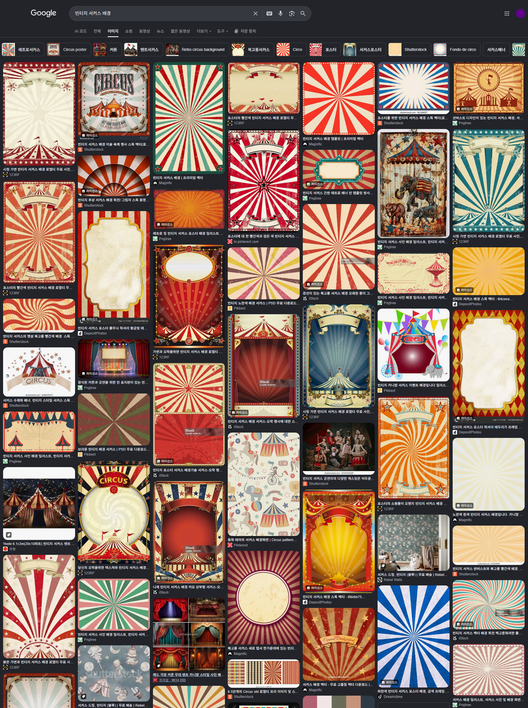
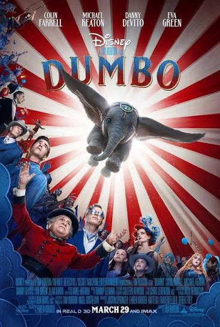
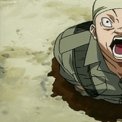
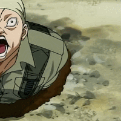

https://www.dogdrip.net/731293456
유튜브에 전범기 노빠꾸로 밖아놨다고하지만

빈티지 서커스 배경에 가깝다
서양에서는 자주 쓰는데

아기 코끼리 덤보 포스터에서도 쓰였음 (물론 이것때문에 한국에서는 논란이 있긴했음)
서커스 관련으로 많이 쓰이긴함
물론 비슷해보여서 반감 드는건 사실이지만
그냥 무조건 전범기 이러진 말자
https://www.dogdrip.net/731293456
유튜브에 전범기 노빠꾸로 밖아놨다고하지만

빈티지 서커스 배경에 가깝다
서양에서는 자주 쓰는데

아기 코끼리 덤보 포스터에서도 쓰였음 (물론 이것때문에 한국에서는 논란이 있긴했음)
서커스 관련으로 많이 쓰이긴함
물론 비슷해보여서 반감 드는건 사실이지만
그냥 무조건 전범기 이러진 말자


햇빛문양 일본에서 1800년대부터 쓰던거고 나치문양처럼 2차대전시기나 일제강점기때 세력들이만든 깃발도 아니고
발작하는게 그냥 일본이 싫어서밖에 이유가 없음
그것도 근 20년 이내에 생긴 선동으로 만들어진거임
90년대 일본해상자위대가 해자대기(욱일기) 달고 우리나라 오고 스파2 혼다 스테이지 배경에 겁나 크게 나오는데 논란 없었음
애초에 전범기라면 일제의 국기 = 일장기여야 되는데 왜하필 해군기를?
일단 이렇게 뭐라도 제시하면 듣는척이라도 하고 반박을 해야하는데 그저 너 원종이지 하나 던짐
영포티 몰이 빨갱이 몰이랑 뭐가 다르나싶음
욱일기는 방사문양보단 가운데 빨간 원이 핵심인디, 방사문양만 봐도 다 욱일기라하면..
이런 정보 좀 널리 알려져야할듯
지미카 글 ㅋㅋ 진짜 소름돋던데
욱일승천기는 빨간색 원이랑 방사가 붙어있음
암살자들 왜 논란인지 모르겠다는 분들한테나 논란일듯
콜옵사에는 발광하는 투명한분들
전범기 지미!!
실패한 디자인의 생물
이렇게 그렇게 말하니까 덤보가 카미카제 돌격하는 것처럼 보이잖아 ㅋㅋㅋ
뭐, 애매한 부분이라고 보긴 함 불교 만자가 좋은 예시기도하고
문제는 이때다 싶어서 욱일기 자체도 쓰는게 뭐 어때서? 하면서 등장하는 일뽕찐따 병신 원종이들때문임
심지어 이런 글에 기가막히게 빠짐없이 등장함
그러면 이제 댓글 흑백으로 창나는거임 원종이냐 아니냐로
애초에 원종이새끼들이 문제임 병신 일뽕씹덕새끼들
뭐어때서?
날 흥분시키지마.....
써도 된다 생각하면서도 사람 얼굴에 저래 해놓으니 괜히 정치나 외교 이슈 같아서 흠칫하게되네 ㅋㅋㅋㅋ
코미디언이고 얼굴이 가운데 있으니 어차피 중의적의미 노리고 한것 같은데
아 그런가요 그럼 하켄크로이츠 느낌이지만 불교를 상징하는 심볼을 빵강 배경색에 그려볼까요?
내가 증거 가져오라고 했다가 비추 40개 먹음ㅋㅋㅋ 나보고 눈치 챙기래ㅋㅋㅋㅋㅋㅋㅋ